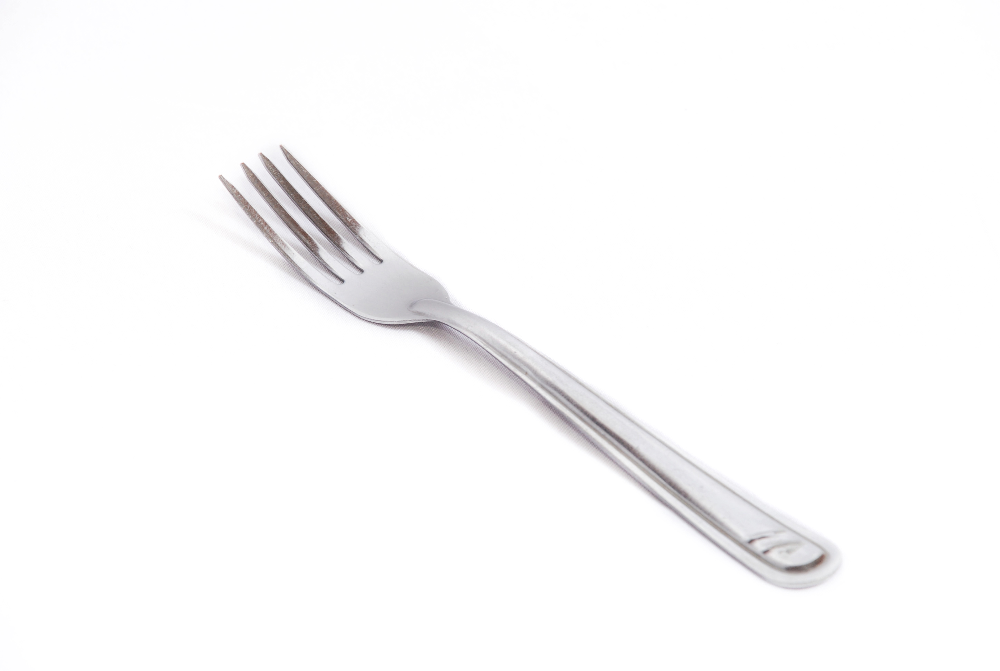

Os garfos
Fonte:www.veja.com.brA origem dos garfos
O garfo tem sua origem datada no século XI surgindo no continente europeu diz a história que o primeiro exemplar do utensílio teria pertencido a princesa Teodora de Bizâncio, esposa de Domênico Salvo.
Era um objeto dourado,pontiagudo e com apenas dois dentes que a princesa utilizava para pegar os alimentos, o talher na época foi alvo de polêmicas pois a igreja o considerava um objeto herético já que segundo ela o alimento fornecido por Deus era sagrado e tinha de ser comida com as mãos e além disso o talher lembrava o instrumento de tortura utilizado pelo diabo.
Com o passar dos anos o garfo começou a se popularizar na europa sendo inclusive aceito pela própria igreja e também passou a distinguir a classe social das pessoas, o objeto também evoluiu com o passar do tempo ganhando mais dentes e modelos com cada um tendo uma função específica na hora de se alimentar.
Vamos conhecer agora 7 tipos de garfos e suas funções :
Garfo comum
Fonte:www.lauxlocacoes.com.br
Esse garfo é formado por 4 dentes,e possui uma curva que serve para carregar os alimentos até a boca sem que nos incomodem é o tipo de garfo mais utilizado.
Garfo para aperitivos
Fonte:www.magazineluiza.com.br
É um garfo pequeno,com apenas 3 dentes lembra um pouco o garfo para sobremesa sua função é a captura de aperitivos na mesa.
Garfo para sobremesas
Fonte:www.casamarela.com.br
Parecido com um garfo comum , só que um pouco menor e os seus dentes são um pouco mais afiados nas laterais o que facilita na hora de pegar a sobremesa como um pedaço de bolo por exemplo.
Garfo para peixe
Fonte:www.americanas.com.br
O garfo para peixe é um garfo um pouco menor que o comum e possui a sua base e dentes um pouco mais larga. Sua função como o próprio nome diz é ser utilizado na hora de comer um peixe, juntamente com a faca para peixe.
Garfo para ostras
Fonte:www.herdmar.com.br
Esse garfo possui apenas 3 dentes e a sua base é curva semelhante a uma colher o que facilita a retirada da carne das ostras.
Garfo para salada
Fonte:www.amazon.com.br
Esse é o garfo utilizado para pegar salada,sua base é um pouco mais larga e reta,seus dentes são grossos e suas pontas afiadas,o seu tamanho varia bastante e depende da ocasião para determinada medida ser utilizada.
Garfo para carnes
Fonte:www.comlines.com.br
Também conhecido como garfo para trinchar é um talher que tem como função auxiliar na hora de corta carne,muito utilizado em churrascos esse garfo é bem longo e possui apenas dois dentes.